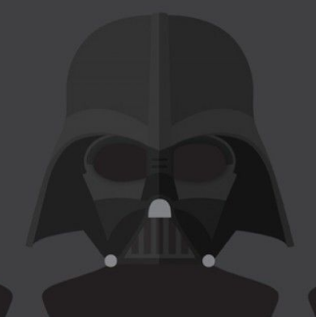

Do you wish to follow this page privately?
Other users won't be able to see if you follow this page.

{{ friend.name }}
{{' @' + friend.username}}None of yours friends watched this.
Created by {{ person.name }};
Genres: {{ genre.name }} / Runtime: {{tvshow.episode_run_time[0]}} minutes
{{ tvshow.overview }}